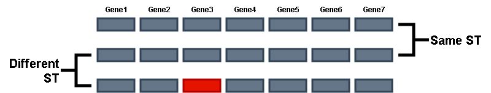

Module 4
Genotyping and genomic distance estimation
Introduction to Genomic Distance Estimation
The measure of overall (dis)similarity between two or more genomes helps in understanding relationships between different organisms.
This is often used for typing bacterial strains in epidemiological studies for species-level to strain-level (subspecies) identification.
This can also be used to quickly identify any outliers or unusual genomes in your dataset.
Genomic distance estimation across your dataset will (or should!) be the first thing you do before beginning your analyses.
There are multiple approaches to go about this ranging from fast and approximate to slow and accurate.
Multi-Locus Sequence Typing (MLST)
MLST is a method used to classify bacteria based on the sequences specific, highly conserved housekeeping genes.
Since housekeeping genes are highly stable (less prone to random mutations as their functions are critical), this provides a stable and reproducible way of typing bacterial strains.
From a pathogen surveillance perspective, it is useful for quickly identifying the bacterial strain that is responsible for an ongoing outbreak.
There are multiple MLST methods, the most common being 7-gene MLST. This method identifies 7 specific housekeeping gene alleles and assigns a type, referred to as the ST (Sequence Type), based on the combination of alleles present.

The specific 7 genes used for this typing differs across species. This is referred to as the MLST schema. Different organisms are typed according to different MLST schema. As we saw before, EnteroBase has MLST information for certain species. PubMLST is also a good resource to explore different MLST schema for different species.
EXERCISE: Assign Sequence Types Using MLST
Use the mlst tool to identify the ST type for the sample genomes. They should be available in test_datasets/salmonella_assemblies/, or as we saw in the previous module you can download assemblies using datasets.
Click to reveal answer
mlst --nopath NWU_2025_workshop_data/test_datasets/salmonella_assemblies/*.fna > mlst_table.tsvNWU_2025_workshop_data/test_datasets/salmonella_assemblies/*.fna : What does the * mean here?
- The
*signifies a wildcard. - wildcards in
bashare specific characters that have special meaning and they can help in finding files, directories or text that match patterns, as opposed to having to type out the full names every time. *means “anything” .*.fnameans anything that ends with.fna.G*.fnameans anything that begins with aGand ends withfna, and so on.- There are several other wildcards in bash with different special meanings.
- Wildcards are powerful tools that can help you quickly find text, make specific manipulations to text files, and find files and folders in your computer by specifying patterns.
- Learn more about wildcards here!
Above we used the 7-Gene MLST method, however there are other MLST methods such as wgMLST and cgMLST which instead of only 7 genes, use alleles from the whole genome or the core genome respectively. These methods use more than just seven genes and therefore offer higher resolution in typing. chewBBACA is a popular software for creating and determining cgMLST/wgMLST.
Depending on the organism, different typing schemes are widely used. Consult up-to-date literature for your organism of interest to see which is the most prevalent typing scheme in your case.
MinHash distance estimation
- MinHash or MASH is a method for estimating approximate genomic distances by comparing k-mers
- A given whole genome sequence is divided into several very short sequences called K-mers, where K stands for the length of the short sequences. (for example, if the genome was divided into several 31bp long sequences, K = 31)
- These K-mers are then compared to see how many identical and how many non-identical k-mers there are between two different genomes.
- The exact computation can be seen here but in effect this gives you an approximate similarity or dissimilarity score.
- This method is very fast and computationally efficient, making it easy to compare thousands to tens of thousands of genomes in a very short time.
Exercise: Calculate pairwise MASH distances
Use the mashtree tool to calculate all-vs-all pairwise MASH distances for the genomes in test_datasets/salmonella_assemblies/. “all-vs-all pairwise” means we will be comparing every genome in our set to every other genome.
mashtree by default only reports a dendrogram - which is a tree-like hierarchical grouping of similar items. We need this dendrogram for visualization purposes, but make sure to also output a table or matrix so that we have the actual distance values as well
Click to reveal answer
mashtree --numcpus 4 --outmatrix matrix.tsv --outtree tree.dnd NWU_2025_workshop_data/test_datasets/salmonella_assemblies/*.fnaANI (Average Nucleotide Identity)
- A method to calculate the genomic similarity by comparing the percentage of identical nucleotide sequences between two genomes.
- It is similar to MASH in that the two genomes being compared are fragmented into shorter sequences but these fragments are much larger (~1000 bp) than the MASH k-mers.
- The sequence identity of each fragment to its orthologous fragment (i.e the most similar fragment in the other genome) is measured and this is done for all orthologous fragments.
- The average of this nucleotide identity is then reported.
- This method is more accurate than MASH but is also more computationally intensive.
- ANI is commonly used for species delineation but can also be used for sub-species delineation.
EXERCISE: Calculate pairwise ANI
Use the skani tool to calculate all-vs-all pairwise ANI for the genomes in test_datasets/salmonella_assemblies/.
Specifically you must use skani dist as skani has other functions that we dont need right now. Look at the help page by running skani dist --help
Click to reveal answer
skani dist -q NWU_2025_workshop_data/test_datasets/salmonella_assemblies/*.fna -r NWU_2025_workshop_data/test_datasets/salmonella_assemblies/*.fna -o skani.tsvSince we are performing an all-vs-all comparison, the list of query sequences and the list of reference sequences to be compared in our case are the same, hence -q and -r have the same arguments. However with skani (and mash) you can compare two mutually exclusive lists as well, or compare a list with a single genome, depending on your needs.
Take a look at the ANI values reported by skani in the output for each pair of genomes. How do they compare with the mash distances for the same pair?
You may have noticed that the skani output has the full file paths for each sample (if you specified it in the input). In our final output, this is actually a problem as we cannot match the IDs with the IDs from other results due to the paths being appended. As we learned before, we can use sed to find and replace text, but in this case we have a complex long pattern that changes with each line. In these cases, we can use a powerful concept called regular expressions. Regular expressions or regex are a way to describe complex patterns as opposed to exact text. The regex to remove the paths from the skani output would be:
sed 's/NWU_.*\/\(GCA_.*\)_genomic.fna\tNWU_.*\/\(GCA_.*\)_genomic.fna/\1\t\2/g' skani.tsv > skani_cleaned.tsvRegular expressions are a complex topic that is beyond the scope of this workshop, but nevertheless it is an essential tool in the command line. You can learn more about regex here.
SNP Distances
We learned about SNP (Single Nucleotide Polymorphism) calling in Module2. When performing SNP calling, we align a genome to a reference and identify specific nucleotide differences between the genome and the reference. The exact number of these nucleotide differences is called the SNP distance. This SNP calling can be performed for several genomes, all aligned against the same reference.
and the all-vs-all pairwise number of SNPs can be estimated relative to that reference.
This is the most accurate and the most time consuming way to compare two genomes, however the resolution provided is significantly greater than ANI or MASH. For example, when comparing two genomes that are less than 10 SNPs apart (as is often the case during outbreaks), ANI or MASH will not be able to capture those differences.
However, there are some key factors that need to be considered before calculating SNP distances.
Choosing a reference genome:
The reference genome will act as an anchor or the starting point for the alignmnent tool. By definition, sequence alignments will be biased to the reference genome, therefore the choice of reference can greatly impact the quality of the alignment. Ideally, we would want a high quality, complete genome closely related to our samples to act as the reference. This is where the genomic comparison methods we used above can be useful.
Choosing a reference that is the same MLST
If all your samples belong to the same ST, you can choose an appropriate high-quality reference that is also of the same ST.
Choosing a reference that is within a pre-determined MASH/ANI threshold
If an appropriate high-quality reference genome is not available, an alternative is to choose one of your own samples as the reference. This can be done by performing all-vs-all ANI or MASH distance estimation, and picking a reference genome that is approximately equidistant from all the remaining genomes (i.e the midpoint or centroid).
Performing multiple independent alignments
In some cases, your dataset might have two distinct lineages (subspecies/MLST types). In these cases, it is advisable perform your analyses separately with an appropriate reference for each group.
Using reference-free methods
If your dataset is highly diverse with mutliple potential lineages, you can perform reference-free SNP calling. For example, the k-mer based approach, as employed by SNP calling pipeline kSNP, involves breaking up genomic data into odd-length k-mers, and then comparing the k-mers to each other, allowing the center nucleotide to vary.
Other popular methods utilize pan-genome pipelines (e.g., Panaroo, PIRATE, roary) to identify and align orthologous gene clusters within a set of genomes; the resulting multiple sequence alignments can then be concatenated and queried for SNPs.
Overall, reference-free approaches are valuable in situations where bacterial genomes are distant enough that no reference genome is adequately “close” to all the the genomes in the set.
Recombination filtering
SNPs which cluster closely together may have been acquired via recombination and/or horizontal gene transfer (HGT), not independent mutations.
From a SNP calling perspective, this will appear as if a large number of SNPs have occurred one after the other in a particular region of the genome, inflating the SNP distance, when it is really a single event that led to a significant change in the genome.
When your sample set comprises of a set of diverse genomes, even if they are all the same ST (i.e your sample set comprises all the diversity within that ST, and not a group of almost identical clones), you must perform recombinaion/HGT masking.
Core genome vs whole genome alignments
Genome alignment approaches can be categorized as either core-genome alignment or whole-genome alignment based. Core-genome alignment based approaches involve identifying orthologous sequences present in all genomes in a set, while whole-genome alignment approaches extend alignment to regions not present in all genomes.
In most cases, core-genome alignment is the correct approach. For highly clonal samples whole genome alignments can be performed, though in effect this would be equivalent to the core genome alignment.
If your sample set comprises extremely diverse set (eg: multiple species, or several distantly related STs), it is better to perform a concatenated core-gene alignment as done by the pangenome approaches (e.g., Panaroo, PIRATE)
This approach identifies core genes - genes present in all (or most) of your samples, and takes these core gene sequences for each sample and concatenates them together in the same order. This creates an artificial core genome for each of your samples and these core genomes are aligned. Pangenomes will be discussed in more detail in a later module.
EXERCISE: Calulate SNP distances amongst a set of genomes
To calculate SNP distances, we will first perform SNP calling using snippy and obtain a recombination-free core genome alignment using gubbins, filter the alignment so that it contains only variable sites using snp-sites, and then calculate SNP distances using snp-dists.
Create the snippy input file for snippy-multi
To run Snippy using multiple genomes as input (i.e., using the snippy-multi command), we need to provide Snippy with a tab-separated input file. This input file will have one line per each of our input genomes, with the name of the sample as the first column and the absolute path to the sample as the second column.
for filename in $(ls NWU_2025_workshop_data/test_datasets/salmonella_assemblies/*); do bname=$(basename $filename _genomic.fna); echo -e "${bname}\t$(pwd)/${filename}"; done; > snippy_input.tsvRun snippy-multi to generate a list of snippy commands
Now that we have our input file, we can use snippy-multi to create a script, which will tell Snippy which commands to run. To do this, run the following command:
snippy-multi snippy_input.tsv --ref NWU_2025_workshop_data/test_datasets/reference_genome/genomic.gbff --cpus 1 > runme.shsnippy-multi- Snippy’s command for dealing with multiple genomes as inputsnippy_input.tsv- Providesnippy-multiwith the path to our Snippy input file--ref- Providesnippy-multiwith the path to our reference in.gbffformat--cpus 1Number of CPUs to use> runme.shUsestdoutredirection with>to direct the output ofsnippy-multiinto a script calledrunme.sh
Once snippy-multi finishes, we should see a new file, runme.sh, in our current directory:
cat runme.shTo run Snippy, run the script you just created:
sh ./runme.shThis will take some time. Once your Snippy script finishes, you can type ls core.* to see the new files Snippy created:
ls core.*We will be using several of these output files in subsequent steps.
In addition to these output files, Snippy also creates an output directory for each isolate in our data set. We won’t be using these. Let’s create a directory named snippy_final with only the files we are interested in for now:
mkdir snippy_final- Once we’ve created our
snippy_finaldirectory, let’s move all of the Snippy results that we want to keep tosnippy_final(i.e., all the files starting withcore.*):
mv core.* snippy_finalIf we type ls snippy_final, we should see several files within snippy_final, each starting with core.:
ls snippy_finalFor the rest of the lesson, let’s move to our snippy_final directory:
cd snippy_finalIf we type pwd, we should see that we are in our snippy_final directory:
pwdIf we type ls, we should see our Snippy output files:
lsClean a genomic alignment produced using snippy
The file named core.full.aln is an output file produced by Snippy, which contains our genomic alignment. Specifically, core.full.aln file is a FASTA-formatted multiple sequence alignment file. It has one sequence for the reference, and one for each sample; each sequence has the same length as the reference sequence.
To show the names of the sequences in our genomic alignment, run the following command, which prints the sequence headers in our genomic alignment multi-FASTA:
grep ">" core.full.aln We should see all of our input genomes, plus our reference genome (Reference).
We want to supply our genomic alignment to Gubbins so that we can identify and remove recombination. However, core.full.aln contains some weird characters, which Gubbins (and other downstream programs) may not like. Before we can do anything else with core.full.aln, we need to “clean” it using Snippy’s snippy-clean_full_aln function. This will replace all the “weird” characters with N, so that we can use our genomic alignment as input to other tools.
To clean core.full.aln, let’s run snippy-clean_full_aln and output our clean alignment to a file named clean.full.aln:
snippy-clean_full_aln core.full.aln > clean.full.alnOnce snippy-clean_full_aln finishes, we can type ls and see that a new file, clean.full.aln has been created:
lsOur new file, clean.full.aln, contains our clean genomic alignment. We can see that it contains the same sequence headers as core.full.aln:
grep ">" clean.full.alnFind and remove recombination in a genomic alignment using gubbins
Now that we have our clean genomic alignment (clean.full.aln), we can use Gubbins to detect and remove recombination.
run_gubbins.py --helpLet’s use Gubbins to detect and remove recombination in our clean genomic alignment, clean.full.aln; to do this, run the following command:
run_gubbins.py --prefix gubbins --threads 1 clean.full.alnrun_gubbins.py: Call Gubbins--prefix gubbins: Usegubbinsas a prefix for the final output filenames--threads 1: Number of threads/CPUs to useclean.full.aln: Path to our clean genomic alignment, which we will be used as input
You should see several new files produced with the prefix gubbins.*. You can read all about the output files produced by Gubbins here, in the Gubbins manual.
We will be using the file gubbins.filtered_polymorphic_sites.fasta in subsequent steps; this file is a multi-FASTA alignment of recombination-filtered SNPs (i.e., it is an alignment of SNPs alone and does not include constant sites).
Construct a recombination-free core SNP alignment using snp-sites
Now that we have an alignment of recombination-free SNPs present in our genomes, let’s filter that alignment to get only the core SNPs. To do this, we will use SNP-sites.
Use SNP-sites to construct a final, recombination-free alignment of core SNPs
snp-sites -c gubbins.filtered_polymorphic_sites.fasta > clean.core.fastasnp-sites: Call SNP-sites-c: An option that tellssnp-sitesto only output columns containing exclusively ACGT (i.e., core SNPs; )gubbins.filtered_polymorphic_sites.fasta: Ppath to the recombination-free alignment of SNPs produced viagubbinsas input> clean.core.fasta: Write our final, recombination-free alignment of core SNPs to a file namedclean.core.fasta
Calculate SNP distances based on the recombination-free alignment of core SNPs using snp-dists
snp-dists -m clean.core.fasta > clean.core.snp-dists.tsvsnp-dists: Call SNP-dists-m: An option to produce the output in “molten” format. Run the command without this option to see the difference!> clean.core.snp-dists.tsv: Write our SNP distances output to a file calledclean.core.snp-dists.tsv
Genomic distance estimation methods have different strengths and applications, and there is no one-size-fits-all approach. While MLST is more for typing strains based on predefined genes, genome distance methods like MASH and ANI can provide broader, more comprehensive comparisons across whole genomes.